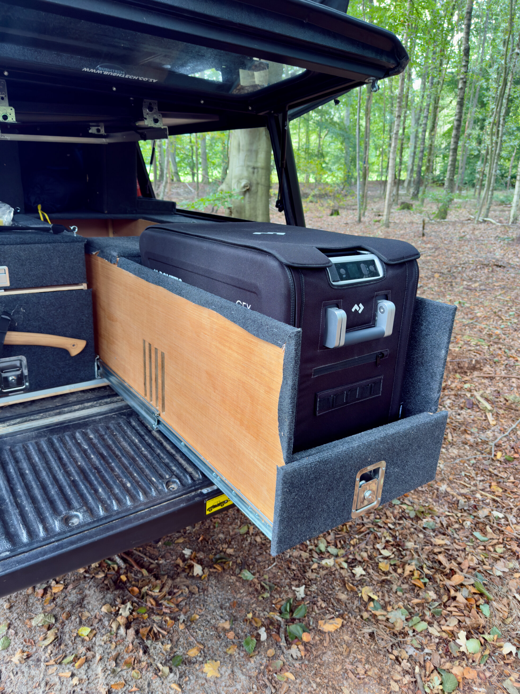
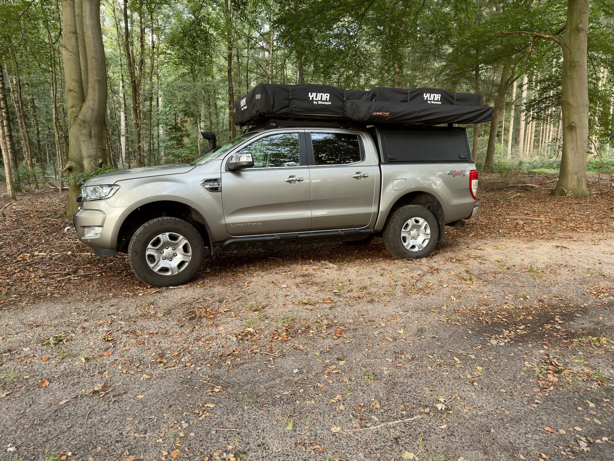
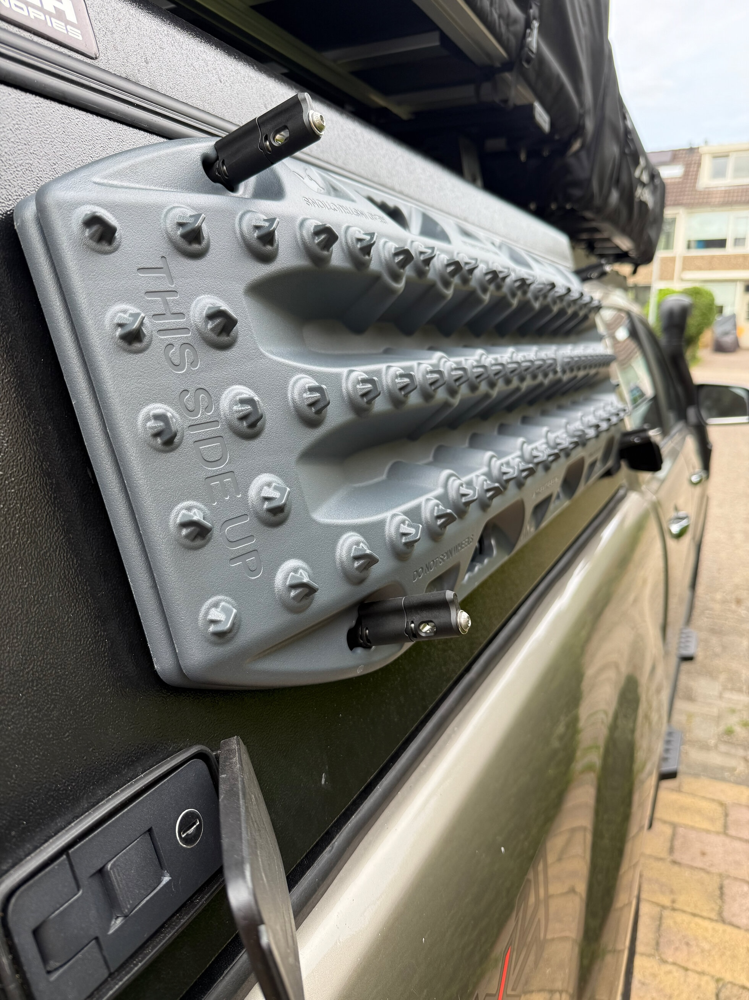
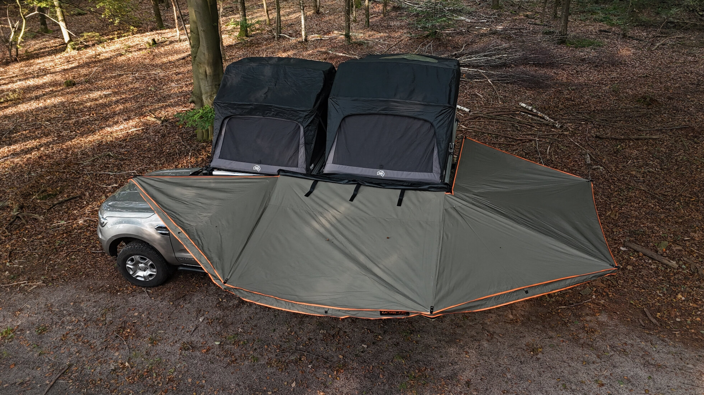

A hill above the vineyards
Slovenia · 2 nights
Norway felt too uncertain for a first overland trip, so a few days before leaving we pivoted south. We found a spot on a hill overlooking the vineyards and it was so good we stayed two nights: wine, sunset, and a very long outdoor shower.
Una park and Status Quo
Bosnia · almost 2 weeks around here
The clearest water we had stayed by. A camping inside the park, then Status Quo outside it, with a free canoe and paddle board. The kids never wanted to leave. We promised to come back on the way home, and we did.
Wild horse plain
Bosnia · no tour, no trail
Finding the entrance took trial and error. Once on the plain we drove for a long time without seeing anything, then a herd appeared. We went off-trail over rocky ground to get close and sent up the drone.
The herders' village
Highest point in Bosnia · [village name]
The only restaurant was the only place to sleep, and something that sounded exactly like howling wolves surrounded us. To this day we do not know if it was wolves or herding dogs.
On foot into Montenegro
4.5 hour hike
Our dog Izzy could not enter Montenegro by car without paperwork we did not have. So we walked: gravel paths, forest, and a lake where the restaurant host checked our passports. We made it after all, dog and all.
Weissee, a spontaneous detour
Austria
A call from friends changed our plans. Campsite prices gave us sticker shock (80 euro a night against 20 in Bosnia), so we booked a real bed, a shower and a kitchen for about the same money. The next day, a hike and then home.
Want to drive something like this?
Rent our Ford Ranger with dual rooftop tents, or let us build your own overland rig.
Rent the Ranger